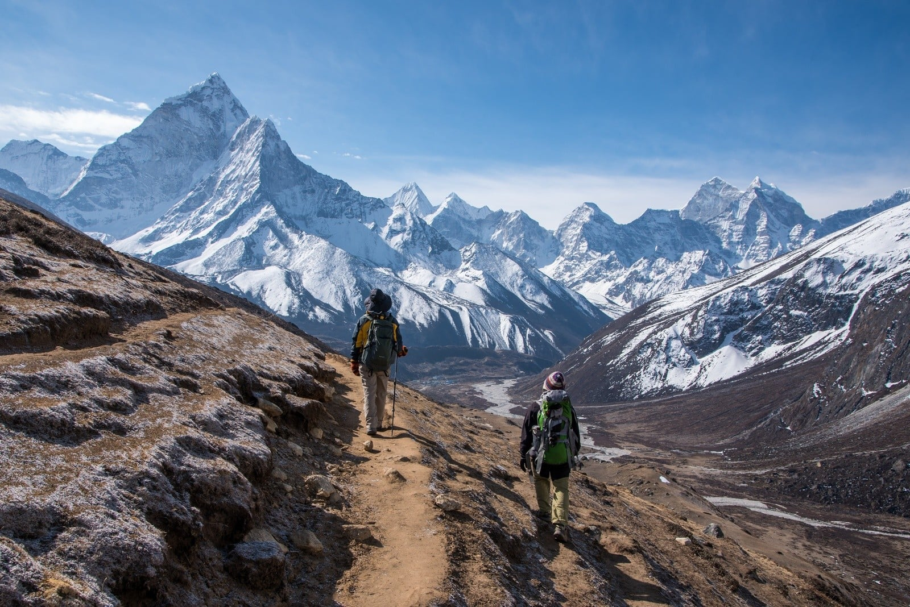
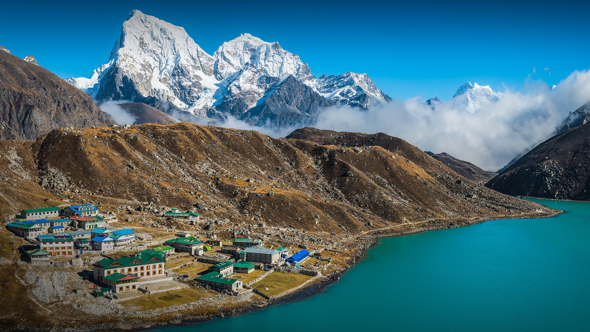
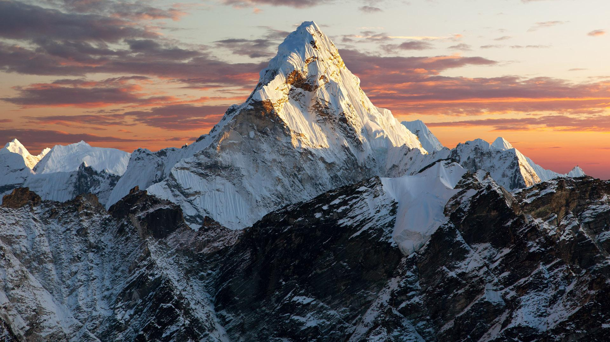
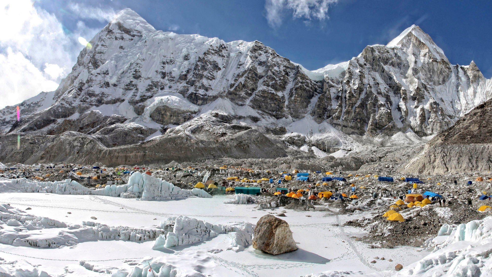
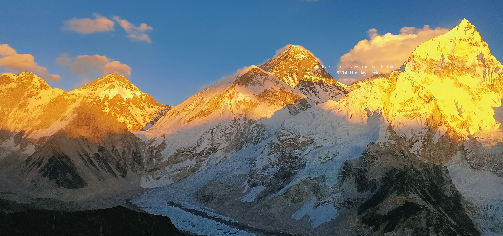
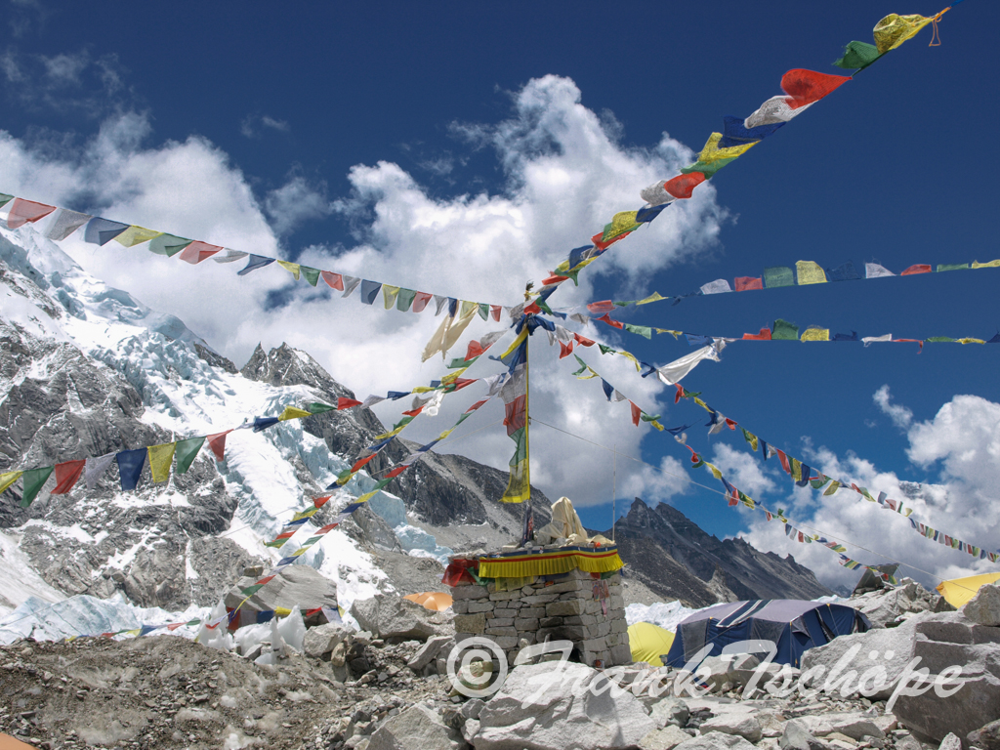
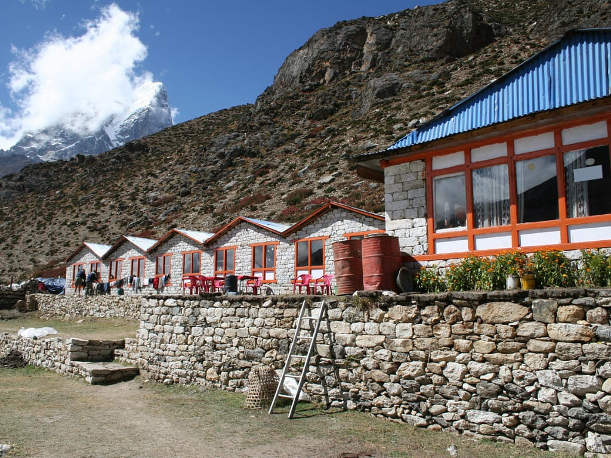
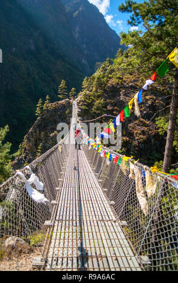
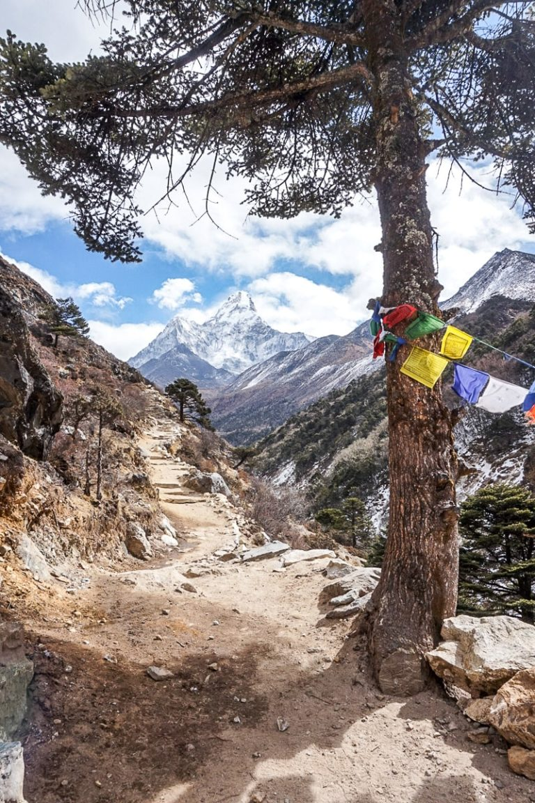
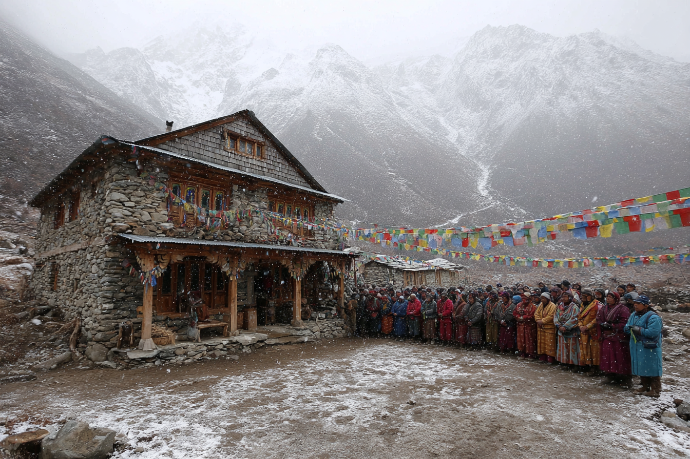

The Trek
The Everest Base Camp trek begins with a scenic flight from Kathmandu to Lukla, then follows the Dudh Koshi river valley through leafy forests and rhododendron slopes. Each day brings a new village and a new view of Everest, Lhotse, and Ama Dablam.
The route includes important acclimatization stops in Namche Bazaar and Dingboche, where you can hike higher and return to lower altitude to reduce the risk of sickness. Along the way, you stay in simple teahouses and meet Sherpa families, monks, and other trekkers.
After 12-14 days, you reach Everest Base Camp and can also climb Kala Patthar for one of the best panoramic views of the Khumbu Icefall and the highest peaks on earth. This trek is demanding, but with the right preparation and local support it is an unforgettable adventure.
Quick Facts
| Duration | 12-14 Days |
| Difficulty | Moderate to Hard |
| Best Time | March-May, September-November |
| Highest Point | 5,364m |
Highlights
Experience the most iconic landmarks of the Khumbu region, from the vibrant trading hub of Namche Bazaar to the dramatic Khumbu Icefall. The trail passes high suspension bridges, prayer-flagged villages, and teahouses with mountain views that change every kilometer.
Along the way, expect to meet warm Sherpa hosts, learn how local communities live at altitude, and witness spectacular sunrises over Ama Dablam and Everest. The final stretch to Base Camp is both emotional and spectacular, with glaciers, prayer stones, and the iconic view of Everest Base Camp.
What to Expect
The trek features daily hikes of 5-7 hours, simple teahouse accommodations, and changing weather at higher altitudes. Meals will often include dal bhat, soups, noodles, and hot drinks to keep you energized.
- Mountain views: Everest, Lhotse, Nuptse, and Ama Dablam.
- Local culture: Sherpa villages, monasteries, and prayer flags.
- Altitude: Gradual ascent with rest days for safe acclimatization.
- Terrain: Forest paths, rocky ridges, glacier moraine, and mountainous villages.
Gallery
A glimpse of the breathtaking landscapes and cultural experiences you will encounter on the Everest Base Camp trek.










